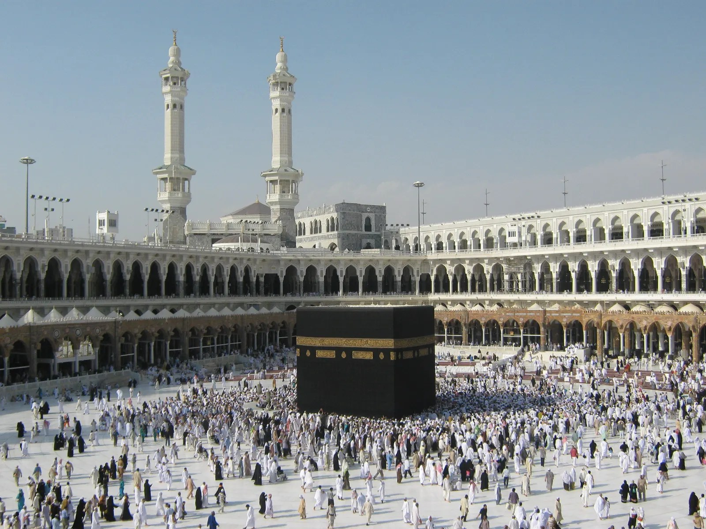

Umrah · Tawaf Supplications
Tawaf Duas — What to Recite During Tawaf

Ask many pilgrims what to recite during Tawaf and they will show you a booklet with a different du'a printed for each of the seven circuits. Here is the honest answer, and it sets most people free: there is no fixed du'a prescribed for each circuit of Tawaf. The Prophet ﷺ never assigned one supplication to the first round, another to the second, and so on. The dua-per-round booklets are a later convention, written as a help for pilgrims — they are not from the Sunnah, as works such as Fiqh as-Sunnah and fatwas on IslamOnline make clear. What follows is what is established. For the walk itself — where to start, how to count — see our Tawaf Step by Step guide.
At the Black Stone, at the start of every circuit: Face the Black Stone, and if you can reach it without pushing, touch or kiss it; otherwise point towards it with your right hand. Say: "Bismillah, Allahu Akbar" — "In the name of Allah; Allah is the Greatest." Fiqh as-Sunnah also records a longer opening du'a you may say at the first circuit: "Allahumma imanan bika wa tasdiqan bikitabik wa wafa'an bi'ahdika wa ittiba'an li sunnat nabbiyyika, bismillahi wallahu akbar" — "O Allah, [I circle Your House] believing in You, affirming Your Book, fulfilling my covenant with You, and following the Sunnah of Your Prophet; in the name of Allah, and Allah is the Greatest."
Between the Yemeni Corner and the Black Stone: In the final stretch of every circuit, recite the du'a of the Qur'an: "Rabbana atina fid-dunya hasanatan wa fil-akhirati hasanatan wa qina 'adhaban-nar" — "Our Lord, give us good in this world and good in the Hereafter, and shield us from the punishment of the Fire" (Qur'an 2:201; Sunan Abu Dawud 1892).
For the rest of the walk: Everything else is open. Fill your Tawaf with dhikr (SubhanAllah, Alhamdulillah, La ilaha illa Allah), recitation of the Qur'an, blessings on the Prophet ﷺ, and above all your own personal du'as — in your own words and your own language. Tawaf is one of the great moments of a pilgrim's life to ask Allah for everything: forgiveness, healing, provision, your family, the whole Ummah. When Tawaf ends, Umrah continues with Sa'i Step by Step; if you are on your first journey, our Umrah for First-Timers guide walks through the whole order, and the Ihram Rules and Hajj 2027 guides cover the sacred state you are in and the greater pilgrimage ahead.
What to avoid:
- Pushing or shoving to reach the Black Stone — harming a fellow pilgrim cancels the spirit of the act; pointing from a distance is enough.
- Treating booklet du'as as obligatory, or feeling your Tawaf is incomplete without them — it is not.
- Kissing the Yemeni Corner, or saying takbir there — it is touched only.
- Raising your voice in group chanting that disturbs those around you; Tawaf is a quiet, personal conversation with Allah.
Quick questions:
- Is there a fixed dua for each round of Tawaf? No. No specific du'a is prescribed for each of the seven circuits; the per-round du'as in printed booklets are a later convention, not the Sunnah. Say the takbir at the Black Stone, recite Qur'an 2:201 between the Yemeni Corner and the Black Stone, and spend the rest in your own du'a and dhikr.
- Can I make dua in my own language? Yes. Personal supplication in any language is encouraged throughout Tawaf — Arabic is not a condition for your own du'as.
- What if I cannot reach the Black Stone? Point towards it with your right hand, say "Bismillah, Allahu Akbar", and keep walking with the flow. Do not push through the crowd — the pointing carries the same meaning.
Sources: Sunan Abi Dawud 1892 (the du'a between the two corners) — Sunnah.com ↗ · Fiqh as-Sunnah (the opening du'a, and that no per-circuit du'a is prescribed) · Sahih al-Jami' 2194 (touching the two corners erases sins)